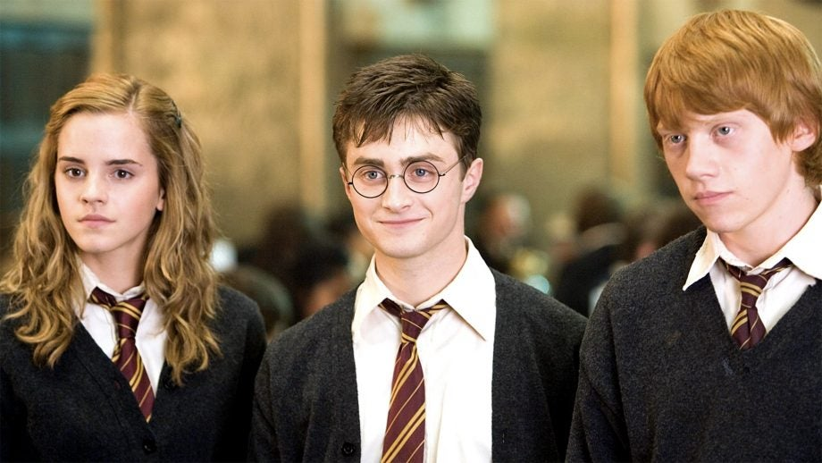
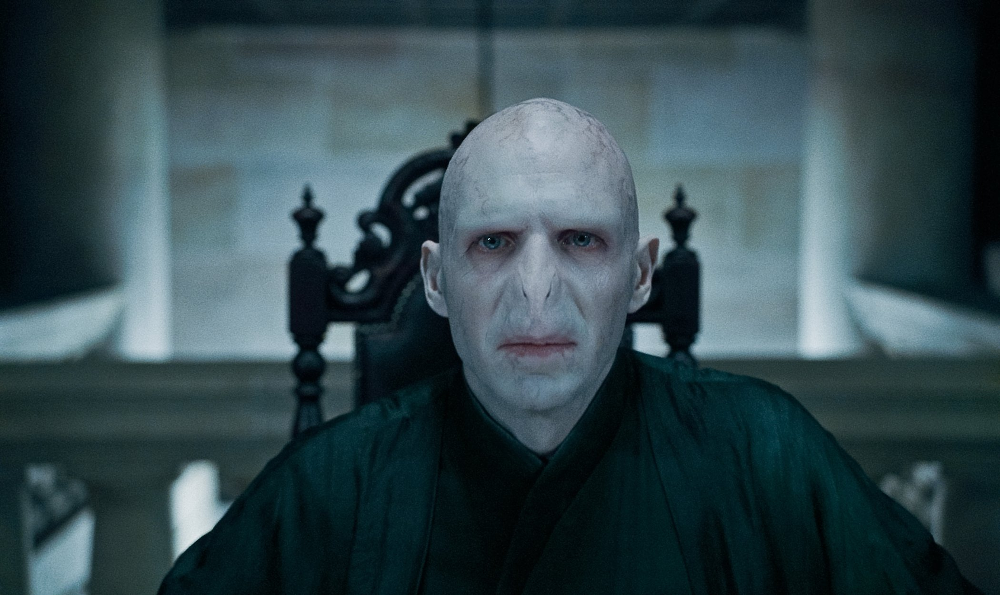

.png)
Harry Potter y Animales Fantásticos
Detalles
Autora: JK Rowlling
Género: Literatura infantil, Literatura juvenil, Fantasía, Magia
Saga principal y precuela: La saga principal consta de Harry Potter y la piedra filosofal, Harry Potter y la cámara de los secretos, Harry Potter y el prisionero de Azkaban, Harry Potter y el cáliz de fuego, Harry Potter y la orden del fénix, Harry Potter y el misterio del príncipe y Harry Potter y las reliquias de la muerte. Además cuenta con una saga complementaria al mundo mágico Animales Fantásticos y dónde encontrarlos.
Adaptaciones cinematográficas: Harry Potter y la piedra filosofal, Harry Potter y la cámara de los secretos, Harry Potter y el prisionero de Azkaban, Harry Potter y el cáliz de fuego, Harry Potter y la orden del fénix, Harry Potter y el misterio del príncipe y Harry Potter y las reliquias de la muerte parte 1 y Harry Potter y las reliquias de la muerte parte 2. De la saga de Animales Fantásticos contamos con Animales Fantásticos y dónde encontralos, Animales fantásticos los crímenes de Grindelwald y Animales Fantásticos los secretos de Dumbledore.
Videojuegos:
- Hogwarts Legacy
- Hogwarts Mystery
Trailer de Harry Potter en Youtube:
Trailer de Animales Fantásticos:
Sinopsis
Sinopsis de Harry Potter:
La historia sigue las aventuras de un joven huérfano llamado Harry Potter, quien descubre que es un mago y es admitido en la Escuela de Magia y Hechicería de Hogwarts.
A medida que Harry comienza a aprender sobre el mundo mágico, descubre que es famoso en la comunidad mágica debido a que sobrevivió a un intento de asesinato de un poderoso mago llamado Lord Voldemort, quien mató a sus padres y dejó una cicatriz en la frente de Harry.
A lo largo de la serie, Harry hace amigos leales como Ron Weasley y Hermione Granger, y se enfrenta a muchos desafíos mientras trata de proteger a Hogwarts y a sus amigos de las maquinaciones de Voldemort y sus seguidores, los Mortífagos.
Sinopsis de Animales Fanásticos:
La historia sigue a Newt Scamander, un magizoólogo británico que llega a Nueva York con una maleta llena de criaturas mágicas. Sin embargo, después de que varias de las criaturas escapan de su maleta y causan problemas en la ciudad, Newt es arrestado por la Congregación Mágica de los Estados Unidos de América (MACUSA).
Mientras tanto, una serie de eventos misteriosos ocurren en Nueva York, incluyendo ataques de un ser mágico oscuro y la aparición de un grupo llamado "Segundos Salemers", que cree en la existencia de la brujería y la magia oscura. Con la ayuda de algunos nuevos amigos, como la ex-aurora Tina Goldstein, su hermana Queenie y un No-Maj llamado Jacob Kowalski, Newt se involucra en la lucha contra la oscuridad en el mundo mágico y el mundo No-Maj.

Harry Potter, Hermione Granger y Ronald Weasley by Trusted Reviews
Personajes
Los personajes que conforman la saga de Harry Potter son:
Harry Potter:
Harry Potter es un joven huérfano que descubre que es un mago que asiste a la Escuela de Magia y Hechicería de Hogwarts, donde se enfrenta a muchos desafíos mientras trata de proteger a sus amigos y al mundo mágico de un poderoso mago oscuro llamado Lord Voldemort.
Hermione Granger:
Hermione Granger es una estudiante brillante y estudiosa en la Escuela de Magia y Hechicería de Hogwarts, que se hace amiga de Harry Potter y Ron Weasley. Hermione es conocida por su inteligencia, determinación y valentía, y juega un papel clave en muchas de las aventuras de Harry y sus amigos mientras luchan contra el malvado mago Lord Voldemort.
Ron Weasley:
Ron Weasley es un amigo leal de Harry Potter y Hermione Granger, que proviene de una familia de magos con un gran número de hermanos. Ron es conocido por su sentido del humor, su coraje y su amor por el juego de ajedrez mágico, y juega un papel importante en la lucha junto a sus amigos Harry y Hermione.
Albus Dumbledore:
Albus Dumbledore es uno de los personajes más importantes de la saga. Es un poderoso mago y el director de la Escuela de Magia y Hechicería de Hogwarts. Dumbledore es conocido por su sabiduría, su capacidad para el liderazgo y su papel en la lucha contra Lord Voldemort. Es también un mentor y un amigo cercano de Harry Potter, y juega un papel clave en la historia del joven mago.
Lord Voldemort:
Lord Voldemort es el principal antagonista de Harry Potter. Es un mago oscuro extremadamente poderoso que busca dominar el mundo mágico y acabar con todo aquel que se oponga a él. Voldemort es conocido por su crueldad, su ambición y su falta de empatía, y se enfrenta a Harry Potter en una batalla épica por el destino del mundo mágico.

Lord Voldemort @Lucy Costa by Flickr
Otros personajes:
- Severus Snape
- Minerva McGonagall
- Draco Malfoy
- Luna Lovegood
- Rubeus Hagrid
- Sirius Black
Los personajes que conforman la saga de Animales Fantásticos son:
Newt Scamander
Newt Scamander es conocido por su amor y cuidado por las criaturas mágicas y su papel como autor de Animales fantásticos y dónde encontrarlos. Es un mago tímido y reservado, pero también valiente y apasionado por su trabajo, lo que lo convierte en un personaje querido por los fans de la saga.
Albus Dumbledore
Dumbledore es un mago poderoso y profesor de Hogwarts, que en esta época aún no es director de la escuela. Él es un viejo amigo del protagonista, Newt Scamander, y trabaja en conjunto con él para enfrentar las amenazas del mundo mágico, incluyendo a Gellert Grindelwald, un mago oscuro y antiguo amigo de Dumbledore que busca establecer el dominio de los magos sobre los No-Majs.
Gellert Grindelwald
Es un mago oscuro extremadamente poderoso y peligroso que busca establecer la supremacía mágica sobre los No-Majs (gente no mágica). Grindelwald es también un antiguo amigo y aliado de Albus Dumbledore, con quien compartió una visión idealista para el mundo mágico antes de que sus caminos se separaran y se convirtieran en enemigos acérrimos.
Tina Golstein
Es una ex-aurora del Congreso Mágico de los Estados Unidos de América (MACUSA) que se encuentra con el protagonista Newt Scamander en Nueva York. Tina es valiente, decidida y comprometida con la justicia, y se convierte en una aliada clave en la lucha contra las fuerzas del mal en el mundo mágico.
Otros personajes
- Credence Barebone
- Nagini
- Queenie Golstein
- Jacob Kowalski
- Leta Lestrange
Opinión personal
Opinión personal de Harry Potter:
Harry Potter es una de mis series de libros favoritas de todos los tiempos. Desde el primer libro hasta el último, J.K. Rowling me mantuvo cautivada con su escritura ingeniosa y la complejidad de los personajes. Me encanta cómo cada personaje tiene su propia personalidad única, y cómo todos ellos trabajan juntos para luchar contra el mal en el mundo mágico. Los temas de amistad, lealtad, coraje y amor son atemporales, y me encanta cómo se presentan en esta serie. Además, las películas son excelentes adaptaciones que complementan perfectamente los libros. Definitivamente recomendaría esta serie a cualquier persona que busque una historia emocionante y llena de aventuras.
Si no la has visto, te recomiendo que veas el trailer y te adentres en este mundo ⬆️(da click en la flecha)

Hogwarts @Brian Moran by Flickr
Opinión personal de Animales Fantásticos:
Como fan de Harry Potter, estaba emocionada de ver qué tenía reservado J.K. Rowling con Animales Fantásticos y no me decepcionó en absoluto. La película está llena de una imaginación asombrosa, criaturas mágicas increíblemente detalladas y personajes interesantes y bien escritos. Eddie Redmayne como Newt Scamander es simplemente perfecto y me encantó la química entre él y su grupo de amigos. La historia es emocionante y ofrece una nueva visión del mundo mágico de J.K. Rowling, ambientada en la década de 1920. Además, las habilidades cinematográficas y la producción son de alta calidad. En general, Animales Fantásticos es una película emocionante y divertida que vale la pena ver tanto si eres un fan de Harry Potter como si eres un espectador nuevo en el mundo mágico de J.K. Rowling.
Si no las has visto, te recomiendo que veas el trailer y te adentres en este mundo ⬆️(da click en la flecha)
Os recomiendo mucho ir a la página oficial del Wizarding World Wikipedia (lo podeis hacer dando click en la imagen o dando click en la palabra)

Hogsmeade by Pxfuel